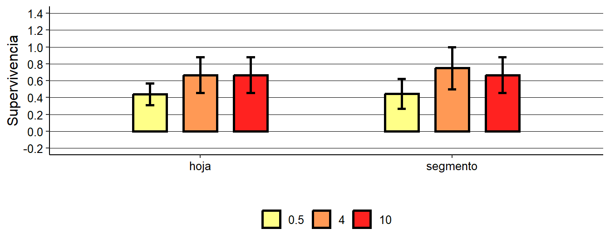

Ensayos de micropropagación
Hormonas
Encabezado de la base de datos
## # A tibble: 6 × 4
## hormona explanto antioxidante supervivencia
## <fct> <fct> <fct> <dbl>
## 1 0.5 hoja pvpp 0
## 2 0.5 hoja pvpp 0
## 3 0.5 hoja pvpp 0
## 4 0.5 hoja pvpp 1
## 5 0.5 hoja pvpp 1
## 6 0.5 hoja pvpp 0Tabla resumen
## # A tibble: 6 × 5
## # Groups: hormona [3]
## hormona explanto n Mean_supervivencia sd_supervivencia
## <fct> <fct> <int> <dbl> <dbl>
## 1 0.5 hoja 16 0.438 0.512
## 2 0.5 segmento 9 0.444 0.527
## 3 4 hoja 6 0.667 0.516
## 4 4 segmento 4 0.75 0.5
## 5 10 hoja 6 0.667 0.516
## 6 10 segmento 6 0.667 0.516Gráfico de barras

Chekeo de linealidad
No hay linealidad –> comparación de medias
Frecuencias
##
## 0.5 4 10
## hoja 16 6 6
## segmento 9 4 6Modelo factorial:
## glm(formula = supervivencia ~ explanto * hormona, family = binomial,
## data = microprop, weights = microprop$pesos)Los weights (pesos) están siendo utilizados para ajustar el impacto de cada observación en la estimación de los coeficientes del modelo. En este caso, los pesos son inversamente proporcionales a la frecuencia de cada combinación de las categorías de las variables explanto y hormona.
El modelo en formato ANOVA se expresa como:
\[ E[Y_{ijk}] = \mu + \alpha_i + \beta_j + (\alpha \beta)_{ij} \]
- \(E[Y_{ijk}]\) es la esperanza de la respuesta de supervivencia.
- \(\mu\) es la media general de la respuesta.
- \(\alpha_i\) es el efecto del nivel
\(i\) del factor
explanto. - \(\beta_j\) es el efecto del nivel
\(j\) del factor
hormona. - \((\alpha \beta)_{ij}\) es el
efecto de interacción entre
explantoehormona.
Supuestos del Modelo Binomial
Para el modelo de regresión logística binomial, los supuestos son:
Distribución de la Variable Respuesta:
La variable de respuesta sigue una distribución binomial:
\[ Y_{ijk} \sim \text{Binomial}(n_{ijk}, p_{ijk}) \]
Relación Lineal en la Escala del Logit:
La relación entre los predictores y el logit de la probabilidad de éxito es lineal:
\[ \text{logit}(p_{ijk}) = \log \left( \frac{p_{ijk}}{1 - p_{ijk}} \right) = \mu + \alpha_i + \beta_j + (\alpha \beta)_{ij} \]
Independencia de las Observaciones:
Los errores son independientes:
\[ \epsilon_{ijk} \sim \text{Independiente} \]
Varianza de la Distribución Binomial:
La varianza de la respuesta binomial es:
\[ \text{Var}(Y_{ijk}) = n_{ijk} p_{ijk} (1 - p_{ijk}) \]
Comparación de medias:
## Analysis of Deviance Table (Type II tests)
##
## Response: supervivencia
## LR Chisq Df Pr(>Chisq)
## explanto 0.0060355 1 0.93808
## hormona 0.3446193 2 0.84172
## explanto:hormona 0.0109127 2 0.99456Los resultados sugieren que, según los datos disponibles, no hay interacción y ni el tipo de explanto, ni el tipo de hormona afectan significativamente la supervivencia de los explantos.
Emmeans
## explanto hormona prob SE df asymp.LCL asymp.UCL
## hoja 0.5 0.437500000 0.496078371 Inf 0.0147416009 0.975863596
## segmento 0.5 0.444444444 0.496903995 Inf 0.0152547059 0.976367309
## hoja 4 0.666666667 0.471404521 Inf 0.0303374767 0.992239045
## segmento 4 0.750000000 0.433012678 Inf 0.0314399716 0.996406236
## hoja 10 0.666666667 0.471404521 Inf 0.0303374767 0.992239045
## segmento 10 0.666666667 0.471404521 Inf 0.0303374767 0.992239045
##
## Confidence level used: 0.95
## Intervals are back-transformed from the logit scaleAntioxidante
Tabla resumen
## # A tibble: 4 × 5
## # Groups: antioxidante [2]
## antioxidante explanto n Mean_supervivencia sd_supervivencia
## <fct> <fct> <int> <dbl> <dbl>
## 1 citrico hoja 8 0.5 0.535
## 2 citrico segmento 4 0.5 0.577
## 3 pvpp hoja 20 0.55 0.510
## 4 pvpp segmento 15 0.6 0.507Gráfico de barras

Frecuencias
##
## citrico pvpp
## hoja 8 20
## segmento 4 15Modelo factorial
## glm(formula = supervivencia ~ explanto * antioxidante, family = binomial,
## data = microprop, weights = microprop$pesos)El modelo en formato ANOVA se expresa como:
\[ E[Y_{ijk}] = \mu + \alpha_i + \beta_j + (\alpha \beta)_{ij} \]
\(E[Y_{ijk}]\) es la esperanza de la respuesta de supervivencia.
\(\mu\) es la media general de la respuesta.
\(\alpha_i\) es el efecto del nivel \(i\) del factor
explanto.\(\beta_j\) es el efecto del nivel \(j\) del factor
antioxidante.\((\alpha \beta)_{ij}\) es el efecto de interacción entre
explantoeantioxidante.La variable de respuesta sigue una distribución binomial:
\[ Y_{ijk} \sim \text{Binomial}(n_{ijk}, p_{ijk}) \]
Resumen del modelo
## Analysis of Deviance Table (Type II tests)
##
## Response: supervivencia
## LR Chisq Df Pr(>Chisq)
## explanto 0.002528723 1 0.95989
## antioxidante 0.022663458 1 0.88034
## explanto:antioxidante 0.002588750 1 0.95942No hay evidencia estadística suficiente para rechazar la hipótesis nula de que ninguno de los coeficientes es diferente de cero. En otras palabras, ni el tipo de explanto, ni el antioxidante utilizado, ni su interacción parecen tener un efecto significativo en la supervivencia de los explantos, según los datos disponibles.
Emmeans
## explanto antioxidante prob SE df asymp.LCL asymp.UCL
## hoja citrico 0.50 0.500000000 Inf 0.0194564587 0.980543541
## segmento citrico 0.50 0.500000000 Inf 0.0194564587 0.980543541
## hoja pvpp 0.55 0.497493718 Inf 0.0232254968 0.984332057
## segmento pvpp 0.60 0.489897872 Inf 0.0267191019 0.987945913
##
## Confidence level used: 0.95
## Intervals are back-transformed from the logit scale